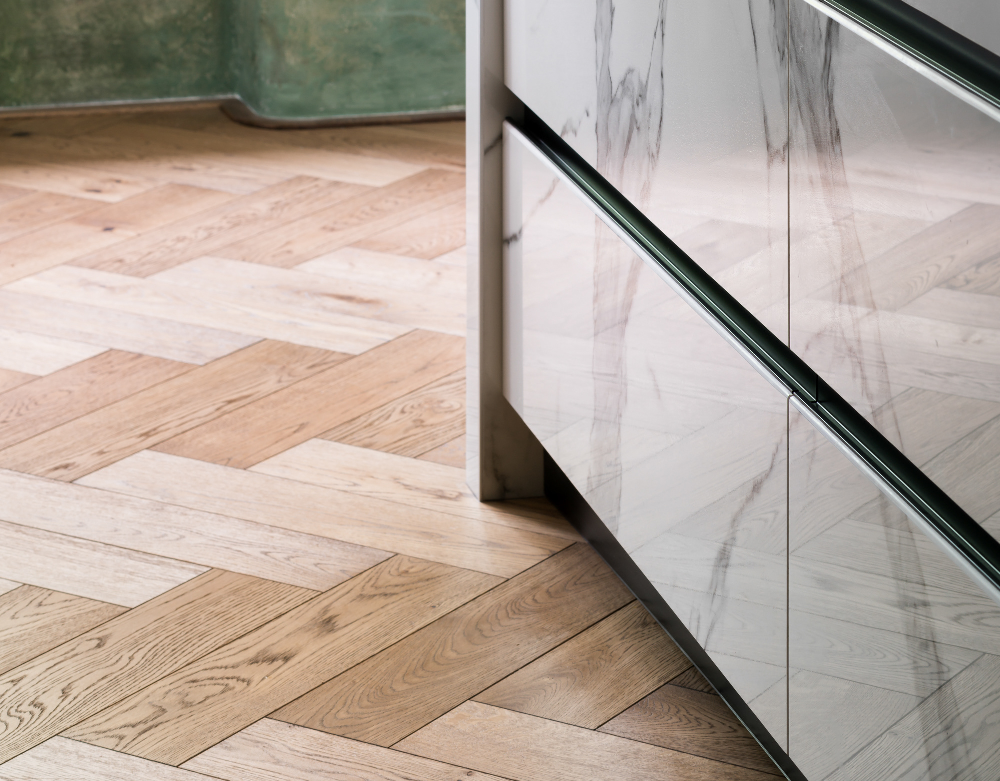

Pokládka dřevěných podlah
Pokládka nové podlahy tak, aby se nevracely chyby z podkladu.
Pokládáme dřevěné podlahy do bytů, rodinných domů i reprezentativních interiérů. Neřešíme jen samotná prkna, ale i skladbu podlahy, návaznost na podklad, dilatace a detail u stěn, dveří, přechodů nebo schodiště. Právě tady bývá rozdíl mezi rychlou pokládkou a dobře odvedenou prací.
Co řešíme před pokládkou
Stav a rovinnost podkladu, vlhkost, výšky napojení, podlahové topení i termín dalších prací v interiéru.
Co klientovi pomůžeme vybrat
Druh dřeva, šířku a délku prken, odstín, typ povrchu i vhodné řešení soklů, schodů a přechodových detailů.
Kde dává naše práce největší smysl
V novostavbách, rekonstrukcích i hotových interiérech, kde je potřeba čistá a přesná realizace bez improvizace na poslední chvíli.
